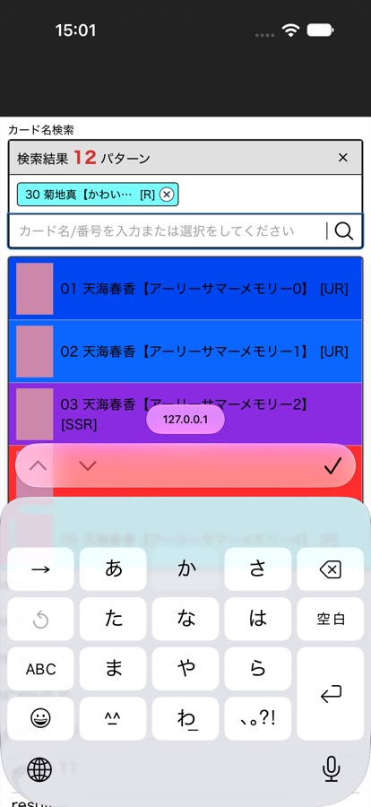

Card search: typing stops after picking a card
Why the search box stops accepting input on iPhone, whether it can be improved, and how to test it.
Confirmed After a card is picked, the box still looks active, but the iPhone keyboard is no longer connected to it. Keys are pressed and nothing arrives. We reproduced this in Apple's iOS simulator and, on 11 November, on a real iPhone 13. QA also reproduced it on production the same day.
Confirmed Yes. It is the same problem. The earlier fix is a workaround that runs after each pick, and it does not reliably restore the connection. This weakness was already known in August.
Partly explained Production now runs the iPhone version of the search box (confirmed 11 November). It freezes within the first one or two picks in most of our tries. The card search code itself has barely changed since August.
Only with a trade-off The last untested option failed on a real iPhone on 11 November. The only two approaches that ever stopped the freeze are the ones the client rejected earlier. This is now a choice between trade-offs, not a technical fix.
13 November: a long-standing iOS limitation, not an iOS update
In short: the cause is a long-standing limitation in how iOS handles Japanese typing, not a recent iOS update.
The 12 November section and this one do not contradict each other. 12 November answered whether an iOS update is to blame. This section explains why the freeze happens. Neither the findings nor the code have changed. The card search on production has not changed since 30 September.
| The cause? | Why | |
|---|---|---|
| iOS updates (27.1, 27.2) | No | The freeze already happened on iOS 26 (July), before iOS 27 was released. iOS 27.2 users are not worse off. |
| How iOS handles Japanese typing (long-standing) | Yes | The current search box behaviour conflicts with this limitation. Android and PC do not freeze. |
What we have confirmed
- The freeze has existed since iOS 26. The first production report came on 31 July ("input stops from the 5th card").
- It happens on every iOS version we tested: iOS 26, iOS 27.0, and a real iPhone on iOS 27 (11 November).
- iOS 27.2 users are not worse off than users on older versions. The data is from production, 29 October to 12 November, about 173,000 card picks on iPhone.
- Android and PC do not have this freeze.
Why it happens
- Since 1 July, at the client's request, the keyboard stays open after a card is picked. To do this, our code moves the cursor to a hidden box and back.
- Picking a card clears the box while iOS is still holding an unconfirmed Japanese word. Sometimes the keyboard's connection breaks: the keyboard is still showing, but nothing typed goes in.
- On iOS, only a real tap from the user can reconnect the keyboard. Code cannot. This is how iOS generally behaves, not something new in a particular update. Every code-based fix has been tried and failed, most recently on a real iPhone on 11 November.
Why does it feel more frequent?
- The freeze has always been random. On the same iPhone with the same steps, it stopped after pick 1, 2 or 8.
- Recent tests show the freeze tends to appear earlier (picks 1 to 3) than in the July report ("from the 5th card").
- We cannot yet say why. Current production data shows no increase, but it cannot count freezes directly. Finding out needs a small freeze log, which is prepared and waiting for approval.
What needs to be decided
Technically, the keyboard cannot both stay open and leave the box empty after a Japanese pick. The client needs to choose one:
- Keep the current behaviour. The keyboard stays open. If typing stops, tap the search box again.
- Close the keyboard after each pick (option 2). No freeze, but the keyboard has to be reopened for every card.
- Keep the half-typed text in the box after a pick (option 3). No freeze, but the user has to delete the text.
- Build our own on-screen keyboard (option 6). A large piece of work, and a different typing experience.
Options 2 and 3 were rejected before (1 July and 5 August), before it was known that the freeze can happen on the very first card. They may be worth asking about again.
11月13日：原因はiOSアップデートではなく、以前からあるiOSの制約
要点：原因は以前からあるiOSの日本語入力の制約であり、最近のiOSアップデートではありません。
11月12日のご報告と本報告は矛盾していません。11月12日は「iOSのアップデートが原因か」、本報告は「なぜフリーズが起きるのか」についてのご説明です。調査結果にもプログラムにも変更はありません。本番のカード検索は9月30日以降変更していません。
| 原因か | 理由 | |
|---|---|---|
| iOSアップデート（27.1・27.2） | いいえ | iOS 27の公開前、iOS 26の頃（7月）からすでに発生しています。iOS 27.2の利用者が悪化している傾向もありません。 |
| iOSの日本語入力の扱い（以前からの制約） | はい | 現在の検索欄の仕組みがこの制約とぶつかっています。AndroidやPCではフリーズは起きません。 |
確認できていること
- フリーズはiOS 26の頃から発生しています。 本番環境での最初の報告は7月31日（「5枚目から入力が止まる」）です。
- テストしたすべてのiOSバージョンで発生しています。 iOS 26、iOS 27.0、iOS 27の実機iPhone（11月11日）で確認しました。
- iOS 27.2の利用者が、古いバージョンの利用者より悪い結果になってはいません。 10月29日〜11月12日の本番データ（iPhoneのカード選択 約173,000件）に基づいています。
- AndroidとPCではこのフリーズは起きません。
なぜ起きるのか
- 7月1日以降、クライアントのご要望によりカード選択後もキーボードを開いたままにしています。そのために、カーソルを一度見えない入力欄に移してから検索欄に戻しています。
- カードを選ぶと検索欄が空になりますが、その時点でiOSはまだ確定前の日本語を保持しています。このとき、キーボードと検索欄のつながりが切れることがあります。キーボードは表示されたままですが、入力が反映されません。
- iOSでは、キーボードのつながりを戻せるのは利用者が実際にタップしたときだけで、プログラムからは戻せません。 これは特定のアップデートで生じたものではなく、iOS全般の動作です。プログラムによる修正方法はすべて試しましたが、いずれも解決しませんでした。直近では11月11日に実機iPhoneで確認しています。
なぜ頻度が増えたように感じるのか
- このフリーズは以前から不規則に起きています。同じiPhone・同じ手順でも、1枚目・2枚目・8枚目と止まる位置が異なりました。
- 最近のテストでは、7月のご報告（「5枚目から」）に比べて、より早い段階（1〜3枚目）で起きる傾向が見られます。
- この変化の原因はまだ特定できていません。 現在の本番データでは増加は見られませんが、フリーズを直接数えることはできません。確認するには、フリーズを記録する小さな計測の追加が必要です（準備済み、ご承認待ち）。
ご判断いただきたいこと
日本語入力でカードを選んだ後に「キーボードを開いたまま」と「検索欄を空にする」を両立することは、技術的にできません。以下のいずれかをお選びください。
- 現状のまま。 キーボードは開いたままです。入力が止まったら検索欄をタップし直します。
- カード選択ごとにキーボードを閉じる（案2）。フリーズは起きませんが、カードごとにキーボードを開き直す必要があります。
- 入力途中の文字をカード選択後も検索欄に残す（案3）。フリーズは起きませんが、文字を自分で消す必要があります。
- 独自の画面キーボードを作る（案6）。大規模な作業となり、入力の使い勝手も変わります。
案2と案3は以前（7月1日・8月5日）見送りとなりましたが、1枚目から起こり得ると分かる前のご判断でした。改めてご検討いただく価値があるかもしれません。
12 November: is the iOS update to blame, and is it really more frequent?
Not the cause The freeze already happened in July and August, on iOS 26, and we reproduced it on iOS 27.0. On production, people on the newest version (iOS 27.2, released 26 October) show no more signs of trouble than people on older versions. They show slightly fewer. We found no evidence that the update made it worse.
No measurable increase We cannot count freezes directly, because nothing records them yet. Every indirect measure we have is flat. The share of searches typed in Japanese has not changed, and iPhone users show the same pattern as Android and PC users, who cannot have this freeze. The likely reason it feels worse: it can now happen on the very first or second card, and when it happens is random.
What we checked
- Release dates. iOS 27.0 came out on 14 September, 27.0.1 on 28 September, 27.1 on 22 October (one new iPhone model only) and 27.2 on 26 October, the same day as the client's recording. Other websites have reported Japanese-typing problems in Safari on iOS 27, but none matches this freeze exactly.
- Our own changes. The card search on production has not changed since 30 September. No release of ours lines up with the time it started to feel worse.
- Production usage, 29 October to 12 November. About 258,000 card picks: 173,000 from iPhone, linked to the iOS version the phone reported, and 85,000 from Android and PC. Server logs are kept for about 14 days, so earlier weeks cannot be split by device.
Who is on which iOS (share of iPhone picks)
| Days | iOS 27.2 | iOS 27.0 / 27.1 | iOS 26 | iOS 18 or older |
|---|---|---|---|---|
| 29 Oct – 5 Nov | 7–9% | 19–24% | 53–59% | 10–13% |
| 10 – 12 Nov | 21–24% | 17% | 47–49% | 8–13% |
iOS 27.2 is spreading quickly: about one in four iPhone picks today, up from one in twelve two weeks ago.
Signs of trouble by iOS version
When typing stops, the user has to close the keyboard, tap the box and type again, so the next card takes longer to pick. We therefore looked at how often a Japanese-typed pick that follows another Japanese-typed pick takes 20 seconds or more. As a baseline we used the same figure for number-typed picks, where this freeze is far less likely.
| Device | Slow, Japanese after Japanese | Slow, number after number | Difference | Japanese picks measured |
|---|---|---|---|---|
| iPhone, iOS 27.2 | 28.5% | 23.0% | +5.5 | 2,518 |
| iPhone, iOS 27.0 / 27.1 | 31.9% | 23.3% | +8.6 | 5,250 |
| iPhone, iOS 26 | 29.7% | 21.8% | +7.9 | 11,963 |
| iPhone, iOS 18 or older | 32.1% | 25.2% | +6.9 | 2,156 |
| Android and PC (no freeze) | 30.2% | 22.5% | +7.7 | 8,639 |
- iOS 27.2 is not worse. It has the smallest difference of any group. The gap to iOS 27.0 is larger than chance would explain with these numbers.
- Japanese typing is slower on every device, including Android and PC, by about the same amount. So this measure mostly shows that kana takes longer to type than numbers. The freeze is not frequent enough to stand out in it.
- Over time. Across all devices, the Japanese share of picks stayed at 21–23% every week since 28 September. A small slowdown of Japanese picks after about 22 October (about 5%) appears on all devices together, so it does not point to iPhone.
How sure we are
- High The iOS update did not create the freeze: it existed on iOS 26.
- Fairly high iOS 27.2 users, as a group, are not doing worse than users on older iOS.
- Limited "Not more frequent" rests on indirect measures that cannot see each freeze. A rise among a small group, such as one iPhone model, would not show up. The client's own iPhone model and iOS version are still unknown.
Recommendation
To answer "how often" with real numbers, add a small measurement that records each time typing stops after a pick, with the iOS version. It is prepared but has not been released. With approval, a week of production data would give the actual freeze rate per iOS version and show whether a future iOS update changes it. The fix options in the sections below are unchanged.
11月12日：iOSアップデートとの関係、本当に頻度が増えたのか
原因ではありません この現象は7月・8月の時点（iOS 26）ですでに発生しており、iOS 27.0でも再現しています。本番環境のデータでは、最新のiOS 27.2（10月26日公開）を使っている方に、古いバージョンより問題の兆候が多いということはなく、むしろわずかに少ない結果でした。アップデートで悪化したという根拠は見つかりませんでした。
測定できる増加はありません 現時点ではフリーズそのものを記録する仕組みがないため、直接数えることはできません。間接的な指標はすべて横ばいです。日本語で入力される検索の割合は変わっておらず、iPhoneの傾向は、このフリーズが起きないAndroidやPCと同じでした。悪化したと感じられる理由としては、1枚目・2枚目の選択でも起きることがあり、いつ起きるかが不規則であることが考えられます。
確認したこと
- 公開日。 iOS 27.0は9月14日、27.0.1は9月28日、27.1は10月22日（新しい1機種のみ）、27.2は10月26日に公開されました。27.2の公開日はクライアントの録画と同じ日です。iOS 27のSafariで日本語入力の不具合が他のサイトからも報告されていますが、今回の現象と完全に一致するものはありませんでした。
- 当社側の変更。 本番のカード検索は9月30日以降変更していません。悪化を感じ始めた時期と重なるリリースはありません。
- 本番の利用データ（10月29日〜11月12日）。 カード選択 約258,000件。そのうちiPhoneが173,000件で、端末が送るiOSバージョンと照合しました。AndroidとPCは85,000件です。サーバーのログは約14日間しか保存されないため、それより前の期間は端末別に分けられません。
iOSバージョンの内訳（iPhoneのカード選択に占める割合）
| 期間 | iOS 27.2 | iOS 27.0 / 27.1 | iOS 26 | iOS 18以前 |
|---|---|---|---|---|
| 10/29 – 11/5 | 7–9% | 19–24% | 53–59% | 10–13% |
| 11/10 – 11/12 | 21–24% | 17% | 47–49% | 8–13% |
iOS 27.2は急速に広がっており、2週間前は約12件に1件でしたが、現在は約4件に1件です。
iOSバージョン別の問題の兆候
入力が止まると、キーボードを閉じて検索欄をタップし直す必要があるため、次のカードを選ぶまでに時間がかかります。そこで「日本語入力の選択に続く日本語入力の選択」で20秒以上かかった割合を比較しました。基準として、このフリーズが起きにくい数字入力同士の割合も並べています。
| 端末 | 20秒以上（日本語→日本語） | 20秒以上（数字→数字） | 差 | 対象の日本語選択数 |
|---|---|---|---|---|
| iPhone iOS 27.2 | 28.5% | 23.0% | +5.5 | 2,518 |
| iPhone iOS 27.0 / 27.1 | 31.9% | 23.3% | +8.6 | 5,250 |
| iPhone iOS 26 | 29.7% | 21.8% | +7.9 | 11,963 |
| iPhone iOS 18以前 | 32.1% | 25.2% | +6.9 | 2,156 |
| Android・PC（フリーズなし） | 30.2% | 22.5% | +7.7 | 8,639 |
- iOS 27.2が悪いわけではありません。 差が最も小さいグループです。iOS 27.0との差は、この件数では偶然とは言えない大きさです。
- 日本語入力はどの端末でも遅くなります。 AndroidやPCでもほぼ同じ差があります。つまりこの指標が主に示しているのは「かなは数字より入力に時間がかかる」ことで、フリーズはこの中で目立つほどの頻度ではありません。
- 時期による変化。 全端末で見ると、日本語入力の割合は9月28日以降毎週21〜23%で一定です。10月22日頃から日本語入力の選択がわずかに（約5%）遅くなっていますが、これは全端末まとめての数字で、iPhoneに限った変化とは言えません。
確度
- 高い iOSアップデートがフリーズを生んだわけではない（iOS 26で既に発生）。
- 比較的高い iOS 27.2の利用者全体が、古いiOSより悪い結果になってはいない。
- 限定的 「頻度は増えていない」は、一つ一つのフリーズを捉えられない間接的な指標に基づいています。特定の機種など一部の利用者だけで増えている場合は、この方法では分かりません。クライアントのiPhone機種とiOSバージョンもまだ不明です。
提案
「どのくらいの頻度か」を実数で答えるには、カード選択後に入力が止まった回数をiOSバージョンと一緒に記録する、小さな計測の追加をおすすめします。準備はできていますが、まだ公開していません。ご承認いただければ、本番で1週間ほど計測するだけで、iOSバージョン別の実際の発生率が分かり、今後のiOSアップデートで変化したかどうかも確認できます。下記の改善案の内容に変更はありません。
11 November: real iPhone results
iPhone 13, iOS 27, Safari, Japanese Kana keyboard. Same steps as the client's recording: type one kana, tap a card, repeat. The page ran the same search box version as production, on a local copy of the site.
| Who | Search box behaviour | Where typing stopped |
|---|---|---|
| QA, production | Current | Stopped On the 1st or 2nd pick, every try |
| Developer, local | Current | Stopped After pick 1 |
| Developer, local | Current | Stopped After pick 8 (picks 1 to 7 worked) |
| Developer, local | Current | Stopped After pick 2 |
| Developer, local | Option 1: a new input box on each pick | Stopped After pick 1. Repeated tries also stopped by the second word typed |
What this tells us
- The freeze is real on current iPhones and on production. It is not only a simulator effect, and it can happen as early as the first card.
- When it stops is random. The same phone and steps stopped after pick 1, 2 or 8. This fits the client's "about 3 cards" and the older "5th card" reports.
- Option 1 does not help. It removed every part of the current workaround (the hidden box and the delayed return) and gave iOS a brand-new box, inside the same tap. Typing still stopped. So the cause is not how or when our code returns the cursor to the box.
- What remains is the half-typed Japanese word. The freeze follows clearing the box while iOS is still holding an unconfirmed word. Every approach that removes that word from code has failed. The two approaches that stopped the freeze (options 2 and 3) both let iOS finish the word first, by closing the keyboard or by keeping the word.
- Numbers typed on a non-Japanese keyboard skip this path. On the Japanese keyboard even digits can start an unconfirmed word, so number entry may still freeze. Numbers were not retested on 11 November.
What the client's recording shows
The recording is 18 seconds long, on an iPhone, version v1.9.0. The user types か and taps a card, over and over.
| Pick | Chips move to | Typing afterwards |
|---|---|---|
| 1 | Row 1 | Works |
| 2 | Row 1 | Works |
| 3 | New row 2 | Stops Keys are pressed and nothing appears, until the keyboard is closed and the box is tapped again |
| 4 | Row 2 | Works |
| 5 | New row 3 | Stops Same as pick 3 |
| 6 | Row 3 | Recording ends |
The ticket says "card number", but this recording shows kana being typed. Number entry may behave differently, because the workaround is skipped when plain digits are typed. It is included in the test steps below.
What we measured

We tapped the real on-screen Japanese keyboard in an iOS 27 simulator. The test page used the real search box code with sample data, not the full live site.
| Run | After first pick | Later picks measured |
|---|---|---|
| 1 | Stopped | 6 of 6 worked |
| 2 | Stopped | 6 of 6 worked |
| 3 | Stopped | 6 of 6 worked |
While frozen, the page still reported the search box as focused, yet three key presses produced no input at all. Tapping the box again fixed it every time.
Limits of this test (6 November)
- The search box version running on iPhone was not measured. Resolved 11 November: measured on a real iPhone (see above). These runs used
CardSelectLegacy. Production very likely usesCardSelectIOS(see the technical notes). All three runs on that version failed because our test tool could not complete a pick, so they say nothing about the product. Both versions share the same workaround. - The pattern differs. The simulator stopped on pick 1. The client's phone stopped on picks 3 and 5. So we reproduced the failure, but not when it happens.
- Results come from one iOS 27 simulator and three runs. They do not give a real-world failure rate.
Why it happens
- Japanese text is unconfirmed while it is being typed. iOS keeps a private connection between the keyboard and the box during that time.
- Picking a card clears the box while that connection is still open.
- To recover, our code moves the cursor to a hidden box and back. This keeps the keyboard open, which the client asked for in July.
- That sometimes works. When it doesn't, the page has no way of knowing: the box looks fine, and the keyboard is up but feeding nothing.
- A real finger tap on the box rebuilds the connection. Code cannot: on 11 November even giving iOS a brand-new box inside the tap did not rebuild it.
Why it may feel worse
None of these is proven as the cause. The first is now confirmed as a fact.
| Possible reason | Evidence | Status |
|---|---|---|
| A different search box version now runs on production | Confirmed on 11 November: production runs the iOS version. On 11 August the client said that version, on beta, seemed worse than production at the time. QA also saw it fail more often on beta than on staging. Both versions carry the same workaround. | Strongest lead. Version confirmed, effect not proven |
| The moment the box moves down | On the client's recording, input stopped on the two picks that added a chip row. This would explain "about 3 cards" and the older "5th card" report. In the simulator, later new rows worked, so this is not the full explanation. | Open |
| A newer iPhone or iOS version | 12 November: the freeze existed on iOS 26, and production users on iOS 27.2 show no more signs of trouble than users on older versions. The client's iPhone model and iOS version are still unknown. | Unlikely as a whole |
| A heavier page on each pick | On the real iPhone the page sometimes took up to 0.3 seconds to react after a pick. This was not linked to the freeze: working and frozen picks looked the same. | Open |
| Changes to the search box itself | Since 11 August, the only changes to it were usage logging. | Unlikely |
Options
Results below come from the June to August work on real iPhones. Option 1 was tested on 11 November.
| Option | Result so far | Cost for the user | Size | |
|---|---|---|---|---|
| 1 | Swap in a new input box on each pick, so iOS builds a fresh connection | Failed on iPhone Tested 11 November on an iPhone 13. Typing still stopped after the first pick | Not applicable | Not applicable |
| 2 | Close the keyboard after each pick | Stopped the freeze Client rejected it on 1 July | Reopen the keyboard for every card | Small |
| 3 | Don't clear half-typed text until the word is confirmed | Stopped the freeze Client rejected it on 5 August | The typed text stays in the box after a pick | Small to medium |
| 4 | Clear the text or reload the keyboard from code, without moving the cursor | Failed on iPhone Several versions tried on 5 August. Old text came back or doubled | Not applicable | Not applicable |
| 5 | Replace the search box library with a plain box | Failed on iPhone Still froze in August | Not applicable | Not applicable |
| 6 | Build our own on-screen keyboard | Not started Assessment ticket is blocked | Different typing experience | Large |
Recommended next step: a decision by the client. No remaining technical option keeps both the keyboard open and the box empty after a Japanese pick. The choices are:
- accept the current behaviour (tap the box again when typing stops), or
- option 2: the keyboard closes after each pick, or
- option 3: the half-typed word stays in the box after a pick, or
- option 6: a custom keyboard, a large piece of work.
Options 2 and 3 were rejected before the client reported this as getting worse, and before it was known to happen on the first card. They may be worth asking about again.
How to test
Before you start
- A real iPhone with the Japanese Kana keyboard, logged in to an account that can use the card search.
- Choose a game and 弾, on the カード名検索 screen.
Steps
- Tap the search box. Expected: the keyboard opens and the card list appears.
- Type
か. Do not press 確定. Expected: the list narrows to matching cards. - Tap a card. Expected: a chip appears, the box empties and the keyboard stays open.
- Without tapping the box, type
かagain. Expected: the text appears. If it does not, input has stopped. - If input stopped, write down the pick number. Close the keyboard, tap the box and continue. Expected: typing works again.
- Repeat until you have made 10 picks.
- Do three rounds. Reload the page between rounds.
- Repeat with card numbers typed on the number keys.
Please record
| iPhone model | iOS version | Safari or home screen app | Site version (footer) | Input type | Pick numbers where input stopped |
|---|---|---|---|---|---|
The same phone on production, beta and staging would be the most useful comparison. A failing pick number that always adds a new chip row would support the "box moves down" explanation.
Questions for the client
- Which iPhone model and iOS version do you use, and did either change recently?
- Do you use Safari or the home screen app?
- Does it also stop when typing numbers only?
- If the freeze cannot be removed any other way, which is more acceptable: the keyboard closing after each pick, or typed text staying in the box after a pick?
Technical notes
Production version check
CardSelect.jsx picks CardSelectIOS when VITE_TICKET_SERA_86EY1MHAD is on and the device is iOS. Confirmed 11 November: the public production bundle has the flag set to true and compiles the iOS branch, as do beta and staging. The comments in featureFlags.js and .env.example that call it staging-only are out of date.
Event trace for one frozen pick
click target=option chips 0 → 1
focusout search box
focusin hidden box
focusout hidden box (next frame, 25–33 ms)
focusin search box activeElement = search box
key × 3 no beforeinput, compositionstart or input on any elementDead and working picks had overlapping refocus delays (25–33 ms and 25–60 ms), so delay alone does not explain the failure.
11 November device traces (iPhone 13, iOS 27)
Recorded with document-level capture listeners from the Safari Web Inspector console. Times in ms after the tap.
Current behaviour, frozen pick
click option 01
focusout / focusin search box → hidden box (+10 to +290 ms)
focusout / focusin hidden box → search box (next frame)
then no beforeinput, compositionstart or input on any element
Option 1 (new input node, focused inside the tap), frozen pick
click option 01
focusin NEW search box (+58 ms, same tap)
then no beforeinput, compositionstart or input on any element- Working and frozen picks of the current behaviour produce identical traces, so nothing visible to the page distinguishes them.
compositionendnever fires, in working or frozen picks. The code comment inCardSelectIOS.jsxthat relies on WebKit firing it before blur does not hold on iOS 27.- The keystrokes do not go to the hidden box either: its value stays empty and it receives no events.
- The option 1 build was a local branch, switchable per page load. It was not pushed or deployed.
History of the earlier fixes
| Date | Change | Outcome |
|---|---|---|
| 1 Jul | Close keyboard after pick | Client rejected it |
| 1 Jul | Hidden box workaround, keyboard stays open | Passed retest |
| 9–13 Jul | Keep list open, keep number keyboard, cover single-character input | Released 31 Jul |
| 31 Jul | Client report from production | Input stops from the 5th card |
| 4 Aug | iOS version of the box, magnifier fix (#1132) | Merged to staging |
| 5 Aug | Workaround removed, clearing held until the word is confirmed (#1139) | Freeze stopped, but the client rejected it because the typed text stayed |
| 5 Aug | Clearing from code without moving the cursor | Failed on device: old text came back or doubled |
| 7 Aug | Plain custom box and recovery methods | Custom box still froze on iPhone. Input box swap and other recovery methods parked |
| 7 Aug | Client asked to return to the production box while a custom keyboard was considered | Reverted (#1151) |
| 11 Aug | iOS version restored behind a flag (#1160), without #1139 | Hidden box workaround kept |
| 12 Aug | Client feedback on production | "Better than before" |
| 26 Oct | Client recording for this ticket | Input stops after about 3 cards |
| 11 Nov | QA on production, iPhone 13 | Input stops on the 1st or 2nd pick |
| 11 Nov | Option 1 (new input box per pick) on iPhone 13, local build only | Failed: input stops after pick 1 |
How the simulator test was run
An XCUITest drove Safari on an iPhone 18 Pro simulator (iOS 27.0) and tapped the software keyboard. The page mounted the real CardSelectLegacy and SelectedList with a sample store of 87 cards and logged focus, composition and input events. Each run made 8 picks. Picks where the test tap missed the card were excluded, and the last pick of each run had no typing after it. The test kit is not published because it is built around private application code.